PDS - TP Nº2 (Parte 2) - Sofía Ayelén Varela
Contents
Ejercicio 18 - Decimación
Señal analógica: Xa(t) = e^(-a*t)*u(t)
% Parámetros de prueba Ts=0.1; N=100; a=0.8; w=0:1/(N-1):1; for n=1:N; x(n)=exp(-a*n*Ts); end % Calculo la fft y el módulo y la fase de la fft de la señal X=fft(x); Xmodulo=abs(X); Xfase=angle(X); % Gráficos figure subplot(3,1,1) stem(w,x,'r');title('Señal analógica'); xlabel('n'); ylabel('x[n]'); subplot(3,1,2) stem(w,Xmodulo); title('Módulo de la fft de la señal') xlabel('w'); ylabel('|X(w)|'); subplot(3,1,3) stem(w,Xfase); title('Fase de la fft de la señal') xlabel('w'); ylabel('\phi(X(w))');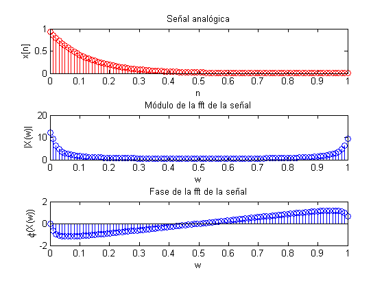
clear();
Ejercicio 19 - Decimación
Señal analógica: Xa(t) = e^(-a*t)*u(t)
% Parámetros de prueba Ts=0.1; N=50; a=0.8; w=0:1/(N-1):1; for n=1:N; x(n)=exp(-a*n*Ts); end
Submuestreo de la señal x[n]
Ma=2; Mb=4; Mc=10; xa=Submuestrear(x,Ma); xb=Submuestrear(x,Mb); xc=Submuestrear(x,Mc); Xmodulo=abs(fft(x)); Xamodulo=abs(fft(xa)); Xbmodulo=abs(fft(xb)); Xcmodulo=abs(fft(xc));
Gráficos
figure stem(Xmodulo);title('Módulo de la fft de la señal') xlabel('w'); ylabel('|X(w)|'); figure stem(Xamodulo);title('Módulo de la fft de la señal submuestreada con M=2') xlabel('w'); ylabel('|X(w)|'); figure stem(Xbmodulo);title('Módulo de la fft de la señal submuestreada con M=4') xlabel('w'); ylabel('|X(w)|'); figure stem(Xcmodulo);title('Módulo de la fft de la señal submuestreada con M=10') xlabel('w'); ylabel('|X(w)|');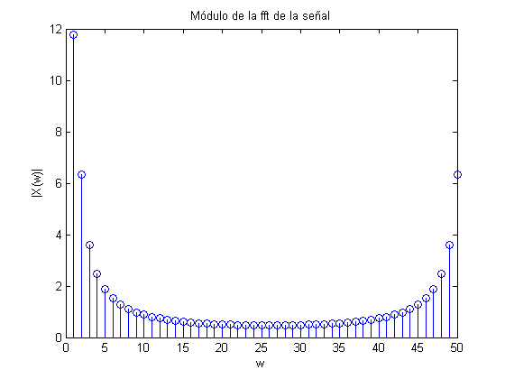 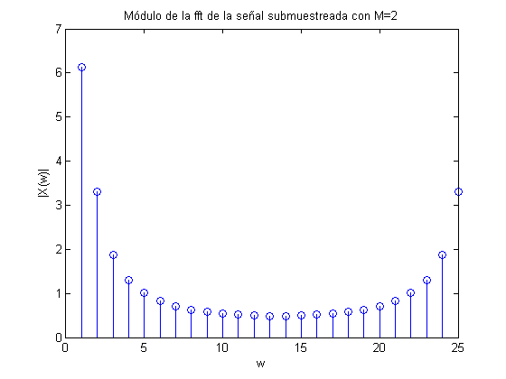 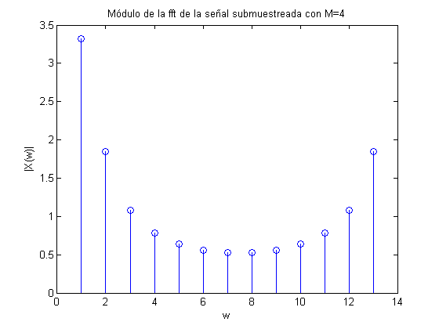 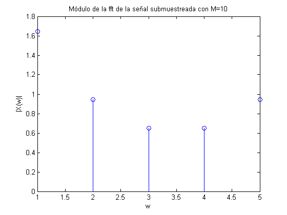
clear();
Ejercicio 20 - Decimación
Señal analógica: Xa(t) = e^(-a*t)*u(t)
% Parámetros de prueba Ts=0.1; N=100; a=0.8; Ma=2; Mb=4; Mc=10; % Valores de frecuencias de corte están normalizados % si N=100 es equivalente a pi se obtiene que: (wcorte=pi/M) wa=50; wb=25; wc=10; w=0:1/(N-1):1; for n=1:N; x(n)=exp(-a*n*Ts); end % Transformada de la señal a filtrar X=fft(x); % Filtro pasa bajos de fase cero para cada ángulo de corte PBa=zeros(1,N); PBa(1,1:wa)=1; PBb=zeros(1,N); PBb(1,1:wb)=1; PBc=zeros(1,N); PBc(1,1:wc)=1;
Salidas del sistema para Ma,Mb,Mc
V_wa=X.*PBa; V_wb=X.*PBb; V_wc=X.*PBc;
Gráficos obtenidos
figure subplot(2,1,1) stem(x);title('Señal original'); xlabel('n');ylabel('x[n]'); subplot(2,1,2) stem(w,X);title('fft de la señal'); xlabel('w');ylabel('X(w)'); figure stem(w,V_wa);title('Señal filtrada con filtro Pasa Bajos y wcorte=50'); xlabel('w');ylabel('V_wa(w)'); figure stem(w,V_wb);title('Señal filtrada con filtro Pasa Bajos y wcorte=25'); xlabel('w');ylabel('V_wb(w)'); figure stem(w,V_wc);title('Señal filtrada con filtro Pasa Bajos y wcorte=10'); xlabel('w');ylabel('V_wc(w)');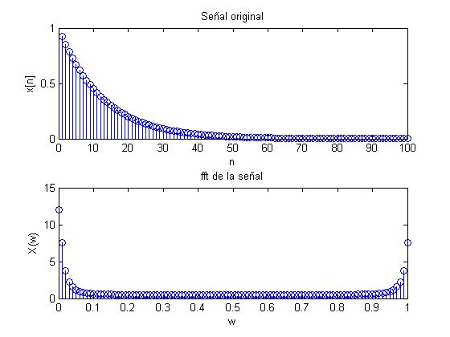
 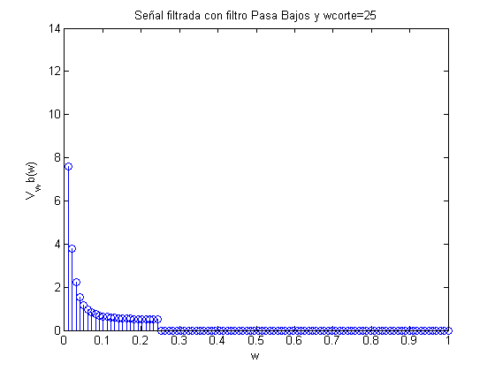 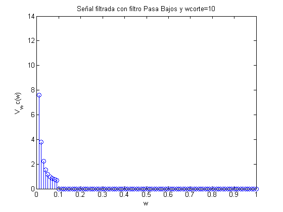
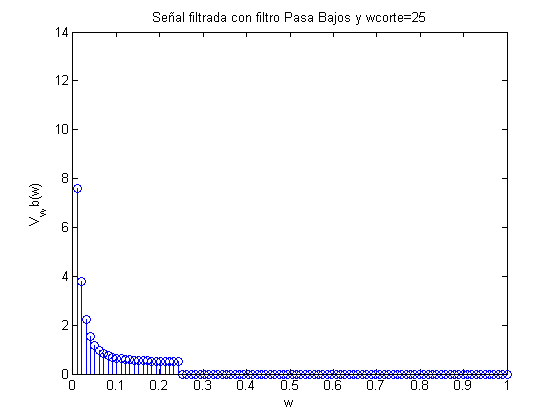 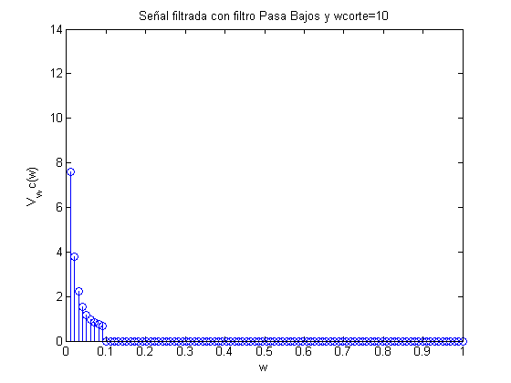 clear();
Ejercicio 21 - Decimación
Se observa una atenuación en los últimos componentes del módulo respecto al Ejercicio 19.
% Señal analógica: Xa(t) = e^(-a*t)*u(t) % Parámetros de prueba Ts=0.1; N=100; a=0.8; Ma=2; Mb=4; Mc=10; wa=50; wb=25; wc=10; for n=1:N; x(n)=exp(-a*n*Ts); end % Transformada de la señal a filtrar X=fft(x); % Filtro pasa bajos de fase cero para cada ángulo de corte PBa=zeros(1,N); PBa(1,1:wa)=1; PBb=zeros(1,N); PBb(1,1:wb)=1; PBc=zeros(1,N); PBc(1,1:wc)=1;
Salidas del sistema para Ma,Mb,Mc
V_wa=X.*PBa; V_wb=X.*PBb; V_wc=X.*PBc;
Submuestreo las señales filtradas del Ejercicio 20
y_sa=Submuestrear(ifft(V_wa),Ma); y_sb=Submuestrear(ifft(V_wb),Mb); y_sc=Submuestrear(ifft(V_wc),Mc);
Transformada de Fourier de las señales filtradas submuestreadas
Y_sa=fft(y_sa); Y_sb=fft(y_sb); Y_sc=fft(y_sc);
Gráficos del módulo del espectro en amplitud de las transformadas
figure stem(abs(Y_sa)); title('Módulo de la fft de la señal submuestreada con M=2'); xlabel('w');ylabel('|Y(w)|'); figure stem(abs(Y_sb)); title('Módulo de la fft de la señal submuestreada con M=4'); xlabel('w');ylabel('|Y(w)|'); figure stem(abs(Y_sc)); title('Módulo de la fft de la señal submuestreada con M=10'); xlabel('w');ylabel('|Y(w)|');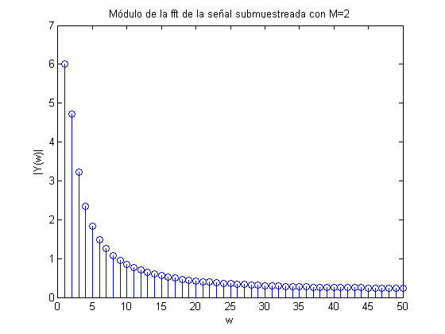 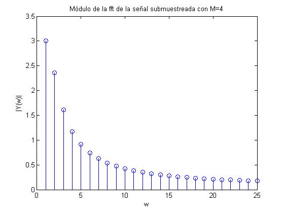 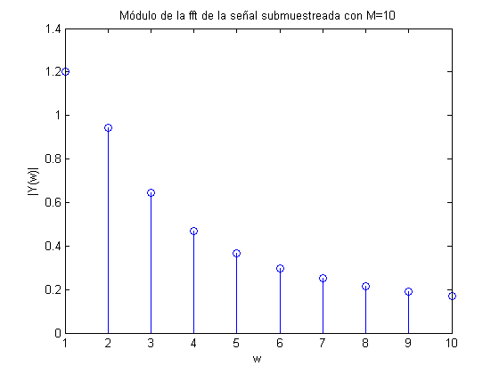
clear();
Ejercicio 22 - Interpolación
Se observa que el bloque sobremuestreador agrega L componentes de alta frecuencia al espectro de Fourier de la señal.
% Señal analógica: Xa(t) = e^(-a*t)*u(t) % Parámetros de prueba Ts=0.1; N=50; a=0.8; La=2; Lb=4; Lc=10; for n=1:N; x(n)=exp(-a*n*Ts); end
Sobremuestreo la señal x[n]
va=Sobremuestrear(x,La);
vb=Sobremuestrear(x,Lb);
vc=Sobremuestrear(x,Lc);
% Transformo las señales
Xmodulo=abs(fft(x));
Vamodulo=abs(fft(va));
Vbmodulo=abs(fft(vb));
Vcmodulo=abs(fft(vc));
Gráficos
figure stem(Xmodulo);title('Módulo de la fft de la señal') xlabel('w'); ylabel('|X(w)|'); figure stem(Vamodulo); title('Módulo de la fft de la señal sobremuestreada con L=2') xlabel('w'); ylabel('|X(w)|'); figure stem(Vbmodulo); title('Módulo de la fft de la señal sobremuestreada con L=4') xlabel('w'); ylabel('|X(w)|'); figure stem(Vcmodulo); title('Módulo de la fft de la señal sobremuestreada con L=10') xlabel('w'); ylabel('|X(w)|');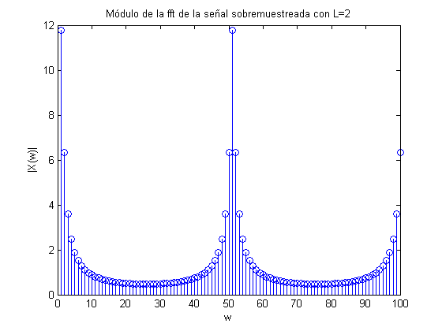 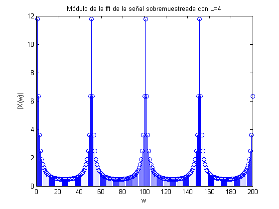 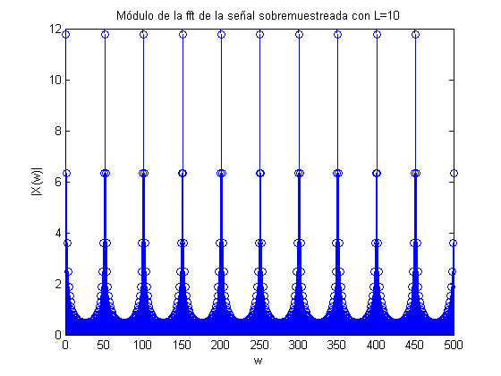
clear();
Ejercicio 23 - Interpolación
Se observa (en los gráficos del módulo del espectro de la señal) que la interpolación de la señal original se ha conseguido para todos los valores de L.
% Señal analógica: Xa(t) = e^(-a*t)*u(t) % Parámetros de prueba Ts=0.1; N=100; a=0.8; La=2; Lb=4; Lc=10; for n=1:N; x(n)=exp(-a*n*Ts); end
Sobremuestreo la señal x[n]
va=Sobremuestrear(x,La); vb=Sobremuestrear(x,Lb); vc=Sobremuestrear(x,Lc);
Transformo las señales sobremuestreadas
X=fft(x); Va=fft(va); Vb=fft(vb); Vc=fft(vc);
%Filtro pasa bajos de fase cero, se debe determinar ángulo de corte
Na=length(Va);
PBa=zeros(1,Na);
n_wa=floor(Na/La);
PBa(1,1:n_wa)=1;
Nb=length(Vb);
PBb=zeros(1,Nb);
n_wb=floor(Nb/Lb);
PBb(1,1:n_wb)=1;
Nc=length(Vc);
PBc=zeros(1,Nc);
n_wc=floor(Nc/Lc);
PBc(1,1:n_wc)=1;
Aplico los filtros, salidas del sistema:
Ya=Va.*PBa; Yb=Vb.*PBb; Yc=Vc.*PBc;
%Gráficos del módulo del espectro w0=0:1/(N-1):1; figure stem(w0,abs(X),'m'); title('Módulo de la fft de la señal') xlabel('w'); ylabel('X(w)'); figure stem(abs(Ya),'b'); title('Módulo de la fft de la señal sobremuestreada con L=2'); ylabel('Y_a(w)'); xlim([0 100]); figure stem(abs(Yb),'b'); title('Módulo de la fft de la señal sobremuestreada con L=4'); ylabel('Y_b(w)'); xlim([0 100]); figure stem(abs(Yc),'b'); title('Módulo de la fft de la señal sobremuestreada con L=10'); ylabel('Y_c(w)'); xlim([0 100]);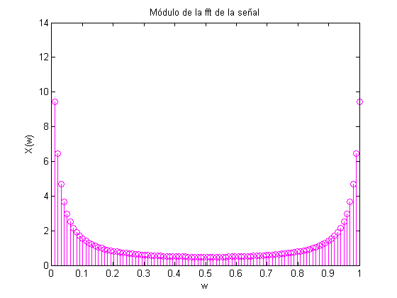 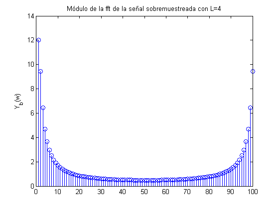
clear();
Ejercicio 24
Para probar el funcionamiento de la correlación desarrollé dos funciones correlación. Una, 'Correlacion.m', recibe las señales y las convoluciona directamente; la otra, 'CorrelacionTransformada', recibe las señales y aplica la Transformada Discreta de Fourier para realizar la correlación en espectro de frecuencia (lo pedido en el ejercicio).
Genero funciones para correlacionar
N=20; fs=1000; fo=50; n=1:N; w0=2*pi*fo/fs; x=sin(w0*n); y=sin(w0*n+pi/2); %Gráfico de las señales a correlacionar figure plot(n,x,'m',n,y,'r');title('Señales a correlacionar'); xlabel('w'); ylabel('Función[w]');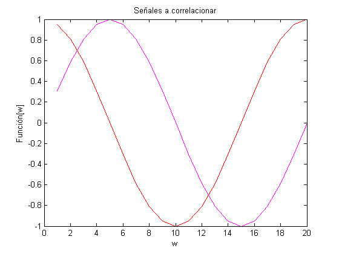
Pruebo correlación entre x e y y comparo con algoritmo predefinido en Matlab
[rseno]=Correlacion(x,y); [rTseno]=CorrelacionTransformada(x,y); [rmatlabseno]=xcorr(x,y);
Gráficos correlación
figure subplot(3,1,1) plot(rseno);title('Función Correlación_x_y'); xlabel('n'); ylabel('Correlación[n]'); subplot(3,1,2) plot(rTseno);title('Función CorrelaciónTransformada_x_y'); xlabel('n'); ylabel('Correlación[n]'); subplot(3,1,3) plot(rmatlabseno);title('Correlación_x_y Matlab'); xlabel('n'); ylabel('Correlación[n]');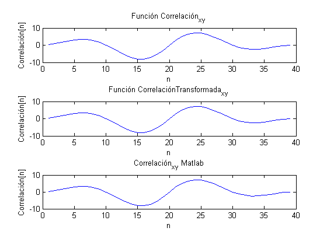
Pruebo autocorrelación de x y comparo con algoritmo predefinido en Matlab
[auto]=CorrelacionTransformada(x); [automatlab]=xcorr(x);
Gráficos autocorrelación
figure subplot(2,1,1) plot(auto);title('Autocorrelación_x_x'); xlabel('n'); ylabel('Correlación[n]'); subplot(2,1,2) plot(automatlab);title('Autocorrelación_x_x Matlab'); xlabel('n'); ylabel('Correlación[n]');

clear();
Ejercicio 25
Genero función x
N=1024; fs=1000; fo=1; A=5; n=1:N; w0=2*pi*fo/fs; x=A*cos(w0*n); xceros=[x zeros(1,1976)]; %Añado cant de ceros para que sea %de largo=3000 D=5; %Distancia=5 km v=1500; %Velocidad=1500 m/s t=2*D*1000/v; %Tiempo m=t*fs; %Cantidad de muestras, pasado a tiempo n2=0:length(xceros)-1; %Vector para construir y; mismo largo que xceros At=1; alfa=10^(At/20); r=randn(1,length(xceros)); xc=circshift(xceros,round(m)); y=exp(-alfa.*n2).*xc+r;
Warning: CIRCSHIFT(X,K) with scalar K and where size(X,1)==1 will change behavior in future versions. To retain current behavior, use CIRCSHIFT(X,[K,0]) instead.
Gráfico de la función que envío y la que recibo
figure plot(n2,xceros,'b',n2,y,'r') title('Señal enviada vs. eco recibido'); xlabel('n'); ylabel('Función[n]'); legend('x','y')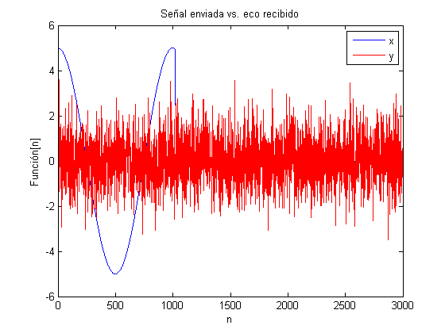
Calculo la correlación
[correlacion]=CorrelacionTransformada(xceros,y); figure plot(correlacion) title('Correlación_x_y'); xlabel('n'); ylabel('Correlación[n]');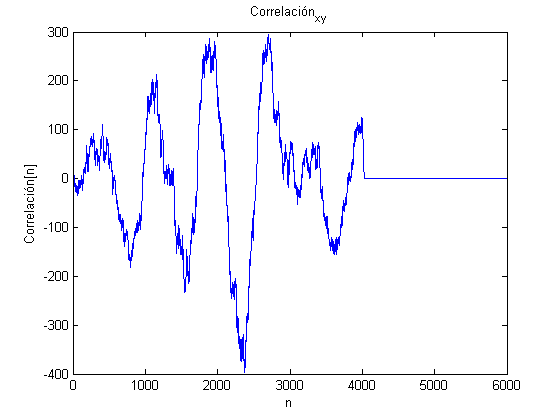
La distancia va a estar definida por la posición del vector correlación en la que está el valor máximo.
[valormax,posicion]=max(correlacion); % Distancia Distancia=(v/1000)*(posicion/fs) %Paso la velocidad a km
Distancia =
4.0470
clear();
Ejercicio 26
Diseño de las ventanas a implementar
N=200; v1=VHanning(N); figure subplot(2,2,1) plot(v1);title('Ventana Hanning'); xlabel('t'); ylabel('v(t)'); v2=VHamming(N); subplot(2,2,2) plot(v2);title('Ventana Hamming'); xlabel('t'); ylabel('v(t)'); v3=BarlettTriangular(N); subplot(2,2,3) plot(v3);title('Ventana Barlett (triangular)'); xlabel('t'); ylabel('v(t)');xlim([0 200]);ylim([0 1]); v4=VBlackman(N); subplot(2,2,4) plot(v4);title('Ventana Blackman'); xlabel('t'); ylabel('v(t)');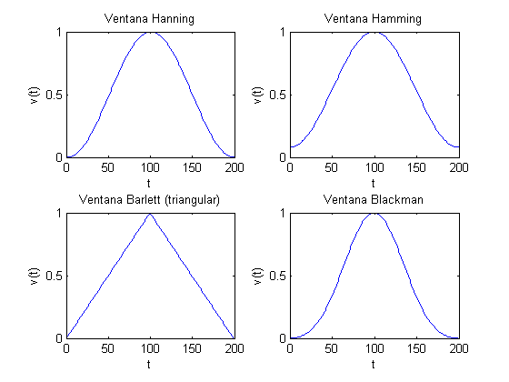
% Genero función de prueba Ts=0.03; n=1:N; w0=2*pi*Ts; x=sin(w0*n); figure plot(n,x,'m');title('Función de prueba'); xlabel('t');ylabel('x(t)');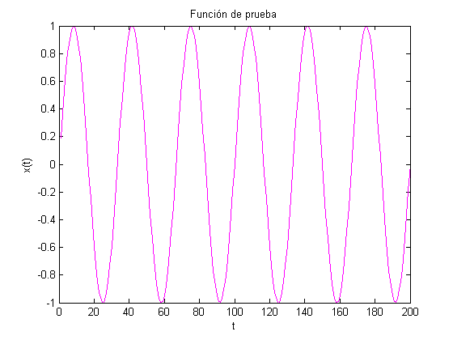
Implemento las ventanas
%Hanning
y1=x.*v1;
Y1=abs(fft(y1));
%Hamming
y2=x.*v2;
Y2=abs(fft(y2));
%Barlett (Triangular)
y3=x.*v3;
Y3=abs(fft(y3));
%Blackman
y4=x.*v4;
Y4=abs(fft(y4));
figure plot(Y1);title('Ventana Hanning'); xlabel('n'); ylabel('|Y_H_a_n_n_i_n_g[n]|'); figure plot(Y2);title('Ventana Hamming'); xlabel('n'); ylabel('|Y_H_a_m_m_i_n_g[n]|'); figure plot(Y3);title('Ventana Barlett'); xlabel('n'); ylabel('|Y_B_a_r_l_e_t_t[n]|'); figure plot(Y4);title('Ventana Blackman'); xlabel('n'); ylabel('|Y_B_l_a_c_k_m_a_n[n]|');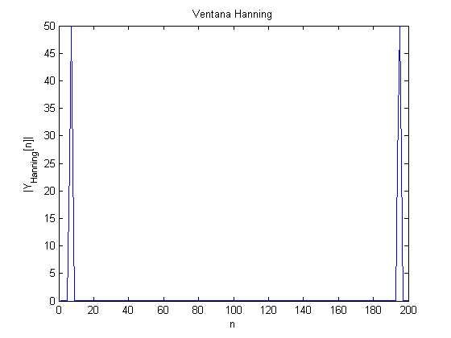 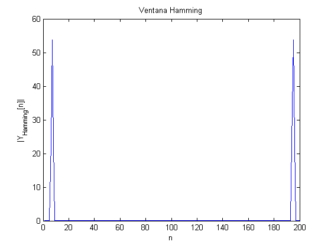 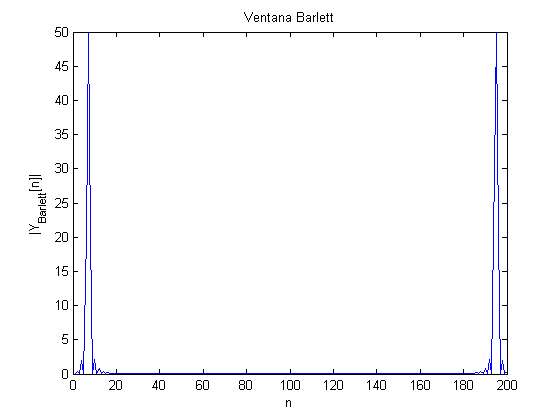 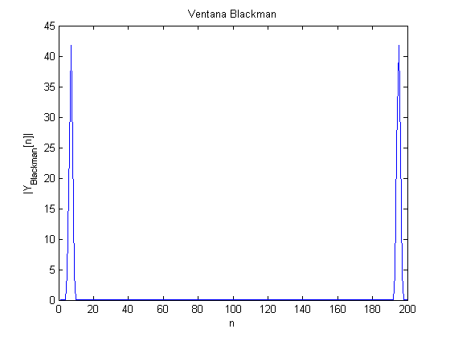
clear();